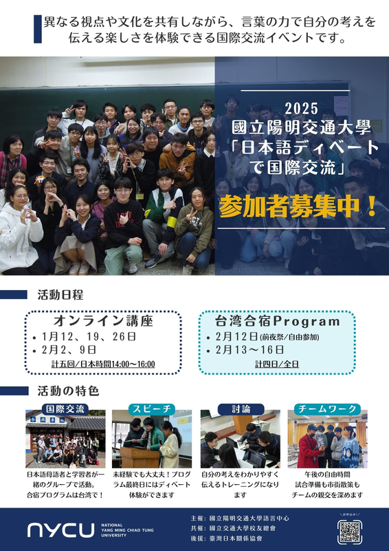
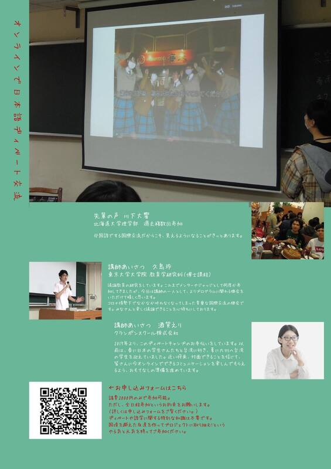
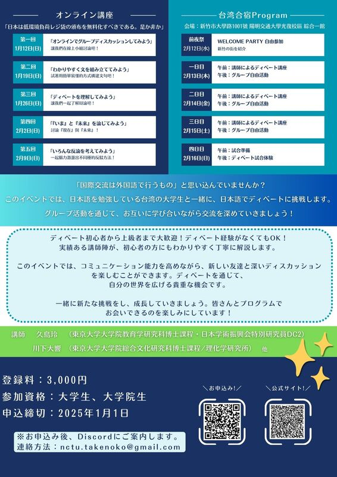

<section class="section" style="border-bottom:none;">
	<div class="container">
		<div class="section-head">
			<span class="eyebrow">2022</span>
			<h2>日語辯論營暨全國日本語辯論錦標賽</h2>
		</div>

		<div class="page-prose">
			<h3>獲勝隊伍</h3>
			<p><strong>冠軍</strong><br>
			黃得誠（國立陽明交通大學資工系2年級）／李昀澤（國立陽明交通大學資工系3年級）／李宛璇（國立陽明交通大學醫學系３年級）</p>
			<p><strong>亞軍</strong><br>
			梁卓然（國立陽明交通大學傳播系4年級）／陳雨賢（國立陽明交通大學電機系3年級）／張祐慈（國立臺灣大學外文系3年級）／林宜（國立臺灣大學外文系4年級）</p>
			<p><strong>辯士獎</strong><br>
			林威宇（國立陽明交通大學資工系3年級）／曾敬桂（國立清華大學原子科學院學士班1年級）／黃姵蓉（國立陽明交通大學運管系2年級）／黃得誠（國立陽明交通大學資工系2年級）／李宛璇（國立陽明交通大學醫學系３年級）／梁卓然（國立陽明交通大學傳播系4年級）</p>
		</div>

		<div class="page-prose" style="margin-top:48px;padding-top:32px;border-top:1px solid var(--color-line);">
			<h3>活動目的</h3>
			<p>語言能力在職場上非常重要，具備良好的語言能力可以更輕鬆的征戰職場，本次活動旨在增進參加者的日語能力以及用日語思考的能力，並且藉由辯論提高參加者的邏輯思考、資料查找能力。另外，透過日語辯論，傾聽能力、統整能力、口頭發表能力，以及提升說話的說服力等等能力都將獲得巨大的提升，並且可以讓日本人以及台灣人進行文化交流，學習不同的文化。</p>
			<p>以「辯論」形式練習日文——不知道如何下手練習口說、寫作嗎？辯論就是最佳的形式！</p>
			<ul>
				<li>說不出來、詞不達意？辯論使用半成稿、有一定格式可遵循，能幫助你有效率的系統練習</li>
				<li>不知道要說什麼/找不到人練習：提供題材與對手</li>
				<li>除了主講師外，每組會安排助教，不用怕跟不上</li>
			</ul>
			<p>與日本人組隊交流、拓展國際觀——本活動同時在日方舉辦，除了有經驗豐富的日籍老師外，更有許多日本學員！分組採混編方式，一起來跟日本人盡情聊天吧！</p>
			<p>報名人數上限：40 人</p>
		</div>

		<div class="page-prose" style="margin-top:48px;padding-top:32px;border-top:1px solid var(--color-line);">
			<h3>比賽題目</h3>
			<p><strong>日本國小應全面禁止ランドセル</strong><br>
			テーマは、日本の「ランドセル重すぎる問題」。台湾人学生との混合チームを作り、ランドセルの文化、置き勉の是非などについての簡単なディスカッションやゲームを楽しみます。</p>

			<h3>活動時程</h3>
			<p><strong>線上活動（請準備麥克風）</strong><br>
			1.23（日）1300～1430｜2.18（五）1900～2000｜2.25（五）1900～2000｜3.04（五）1900～2000｜3.05（六）1900～2030｜3.06（日）1900～2030</p>
			<p><strong>合宿活動（@陽明交通大學）</strong><br>
			3.11（五）1730~（交流活動）｜3.12（六）0900～1500｜3.13（日）0900～1500</p>
		</div>

		<div class="page-prose" style="margin-top:48px;padding-top:32px;border-top:1px solid var(--color-line);">
			<h3>2021.3.26　全國校際日本語辯論錦標賽</h3>
		</div>

		<div class="simple-slideshow" style="max-width:400px;">
			<div class="simple-slideshow-track">
				
				
				
			</div>
			<button type="button" class="ss-prev" aria-label="上一張">&#8249;</button>
			<button type="button" class="ss-next" aria-label="下一張">&#8250;</button>
		</div>

		<div class="page-prose" style="margin-top:32px;">
			<h3>辯論流程</h3>
			<p><u>第一パート</u><br>
			肯定側立論(4分鐘)→準備(5分鐘)→否定側質疑(3分鐘)→準備(2分鐘)→否定側反駁(2分鐘)→準備(2分鐘)→肯定側再反駁(2分鐘)</p>
			<p><u>第二パート</u><br>
			否定側立論(4分鐘)→準備(5分鐘)→肯定側質疑(3分鐘)→準備(2分鐘)→肯定側反駁(2分鐘)→準備(2分鐘)→否定側再反駁(2分鐘)</p>
			<p><u>第三パート</u><br>
			準備(5分鐘)→否定側総括(3分鐘)→肯定側総括(3分鐘)（總計：51分鐘）</p>
		</div>

		<div class="page-prose" style="margin-top:48px;padding-top:32px;border-top:1px solid var(--color-line);">
			<h3>指導老師</h3>
			<p>酒賀えり、久島玲、趙唐、邱佳詮、林尚諠、森田洋明、浅尾友里愛、上條純恵</p>
		</div>

		<div class="page-prose" style="margin-top:48px;padding-top:32px;border-top:1px solid var(--color-line);">
			<h3>參與學校</h3>
			<p><strong>臺灣</strong><br>
			國立台灣大學、東呉大學、國立清華大學、元智大學、文藻外語大學、國立臺北商業大學、國立陽明交通大學</p>
			<p><strong>日本</strong><br>
			東北大学、中央大学、津田塾大学、北海道大学、創価大学、立命館アジア太平洋大学、尚絅高等学校、熊本マリスト学園高等学校、熊本商業高校</p>
		</div>

		<div class="page-prose" style="margin-top:48px;padding-top:32px;border-top:1px solid var(--color-line);">
			<h3>協辦單位</h3>
			<p>臺灣交通大學校友總會</p>

			<h3>指導單位</h3>
			<p>臺灣日本關係協會</p>
		</div>
	</div>
</section>
